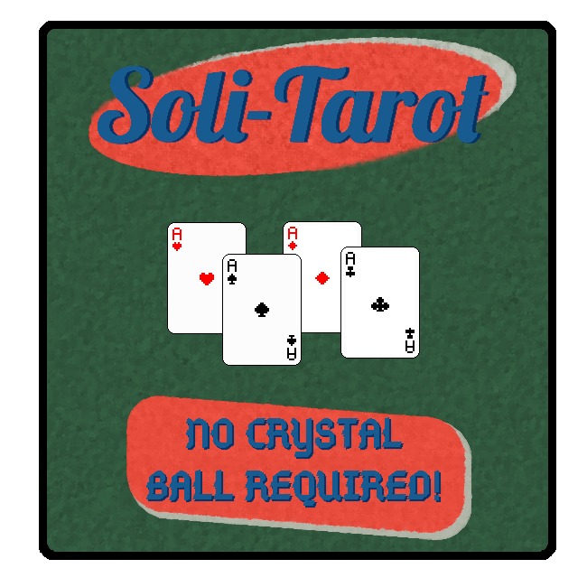
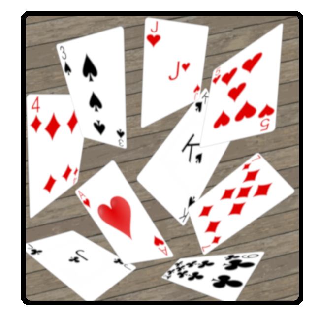
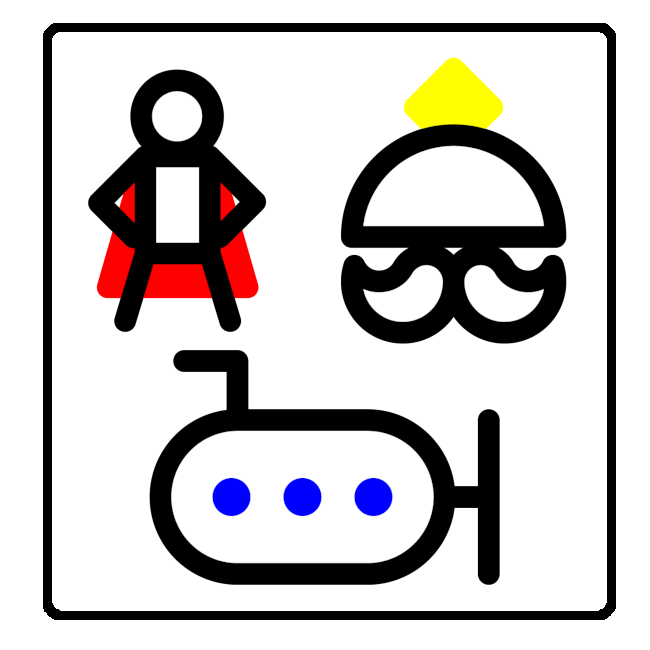
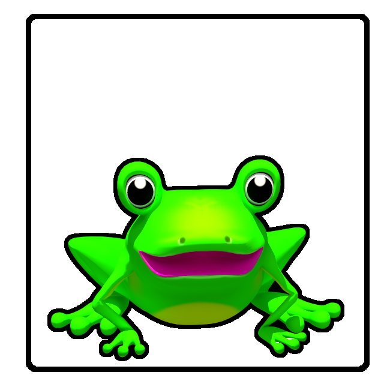

Michael Zyskind
Software Engineer - Game Developer - CS Graduate
Software Engineer - Game Developer - CS Graduate

Roguelike dungeon crawler

Tarot and klondike Solitaire

Bullet hell

Dungeon crawler

Endless platformer

Caravan parody

Sandwich building card game

Job search aggregator
“Don’t let what you cannot do interfere with what you can do.”
— John Wooden
My name is Mike and I graduated with a degree in Computer Science from DePaul University. I have been programming since I was in high school, and what started as a small hobby grew into a source of passion and inspiration for me. I’m always eager for the chance to learn something new.
I've always been a fan of video games as they are full of creativity and endless possibilities. It should come as no surprise that I thought it would be fun to make my own. From that passion came the first of many games, Wild Runner. No matter where my journey takes me, I look forward to my next adventure.
My responsibilities involve the development and maintenance of tools that enable our clients to conduct business more efficiently by streamlining their workflow through a user-friendly web experience. Additionally, I designed and implemented a CI/CD pipeline to better facilitate a collaborative work environment and equip our workplace with a version control system that enhances our ability to track changes.
Languages: PHP, SQL, JavaScript, HTML
Frameworks and other resources: JQuery, Bootstrap, Visual Studio, Git, WinSCP, Liquibase
I contributed to refactoring and cleanup efforts to modernize microservices and meet stricter code
quality standards. Additionally, I researched, designed, and implemented bug fixes and other feature changes to
improve functionality. I also collaborated with various team members as part of research and development work to
gain a better understanding of the product and features being developed.
Languages: Java, Python, SQL
Frameworks and other resources: JUnit, Eclipse, Postman, MySQL Workbench, AWS
I developed a user-friendly web experience by building and redesigning a frontend interface, in
addition to backend solutions such as database management and website maintenance. To debug and troubleshoot, I
created and managed a variety of test cases. Additionally, I collaborated with business heads to plan solution
implementation in a timely manner that aligned with client needs.
Languages: HTML, JavaScript, PHP, SQL
Frameworks and other resources: JQuery, Bootstrap, Visual Studio
I worked on a range of projects that varied from software development to QA testing. The development
work entailed the design and implementation of user-customizable web and desktop applications, algorithms, and
custom interfaces. As part of my QA process I debugged unexpected behavior to resolve any issues that arose during the development
process. Furthermore, my QA work involved rigorous testing and analysis to ensure a satisfying user experience.
Throughout the process I worked independently to communicate with clients about project requirements,
specifications, timeframes, and goals.
Languages: C#
Frameworks and other resources: Unity, Visual Studio